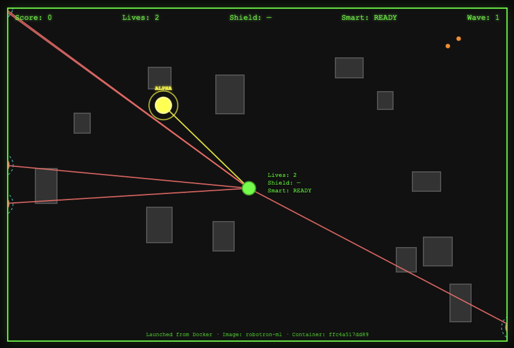
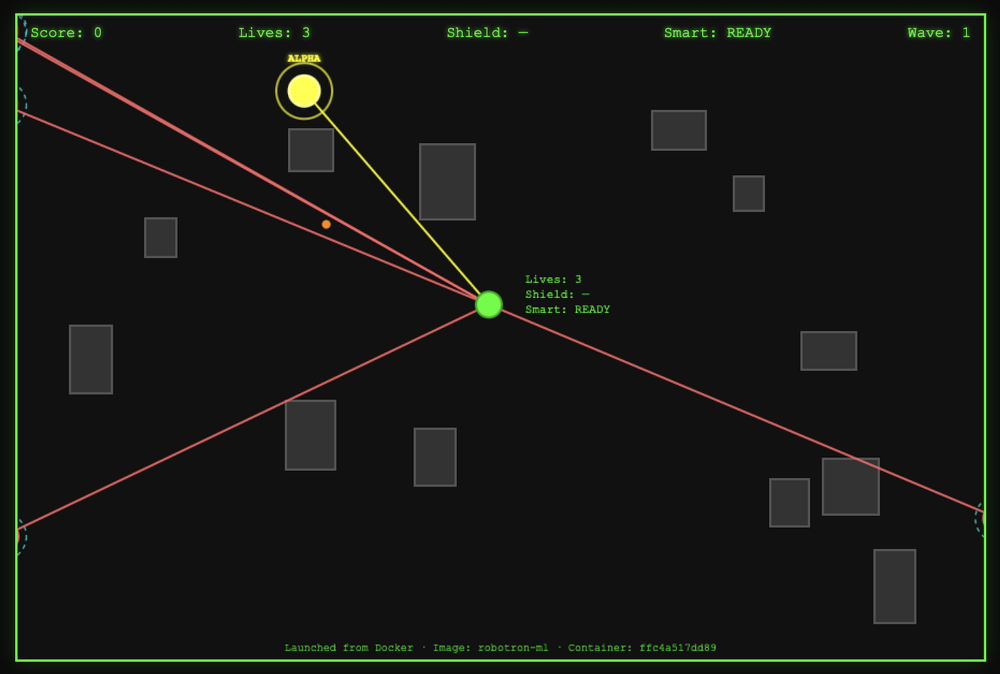
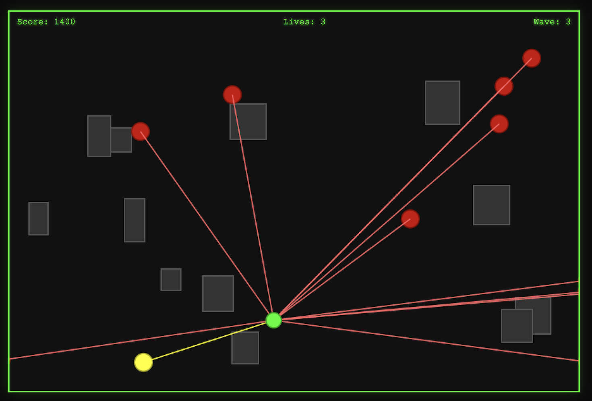

We reimagine the multidirectional shooter as a living arena—where robot hordes use ML to anticipate your position, form up around an alpha, and close escape routes. Move one way, shoot another; fight waves that coordinate in real time.
Adaptive NPCs, predictive aim, formation logic, and optional learned policies (MARL). Robotron as a testbed for decision-making, control, and emergent coordination.
From pixel gameplay to in-browser inference, Neuro Gaming Lab explores how learning agents master and meaningfully interact with games. Reviving the past to build the future of playable AI.
Features
- Dual-stick feel — Arrow keys move, aim when you fire (Space). Move one way, shoot another.
- AI-controlled robots — Formation, alpha leader, flanking, staggered fire, gap-filling to trap the player.
- ML integration — Smoothed velocity prediction, optional DNN for player position, optional MARL policy for move/fire.
- Extras — Smart missile (S), shield (F), destructible walls (G). Waves, score, lives.
- Stack — HTML5/JS game, Streamlit launcher, Docker. DNN + MARL export to JSON for in-browser inference.
Screenshots



Listen
Neuro-Adaptive-Robotron-ML — Arcade Classics